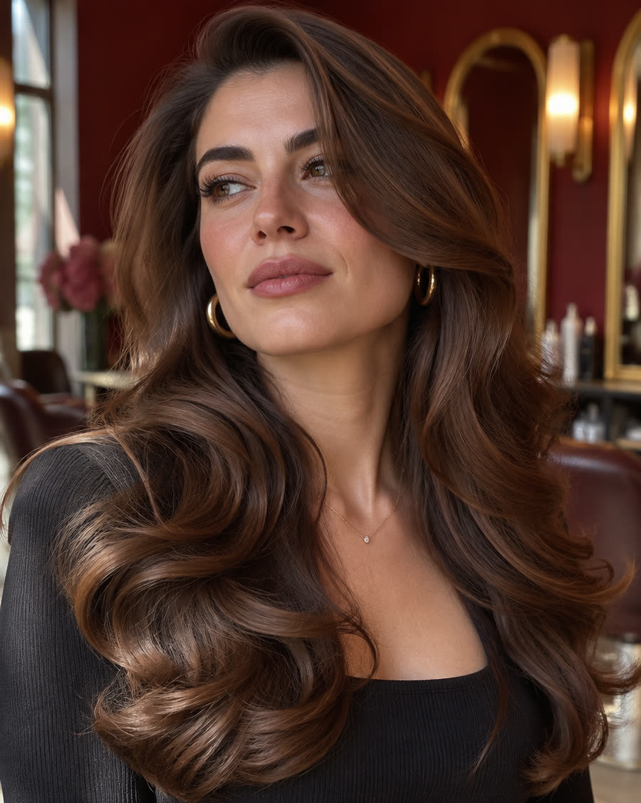
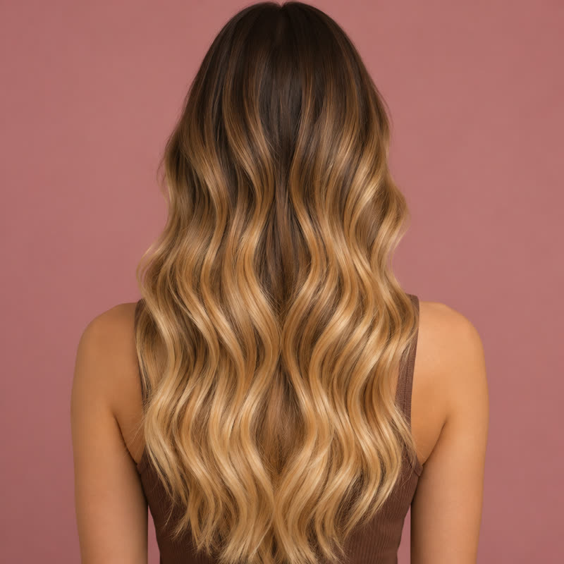
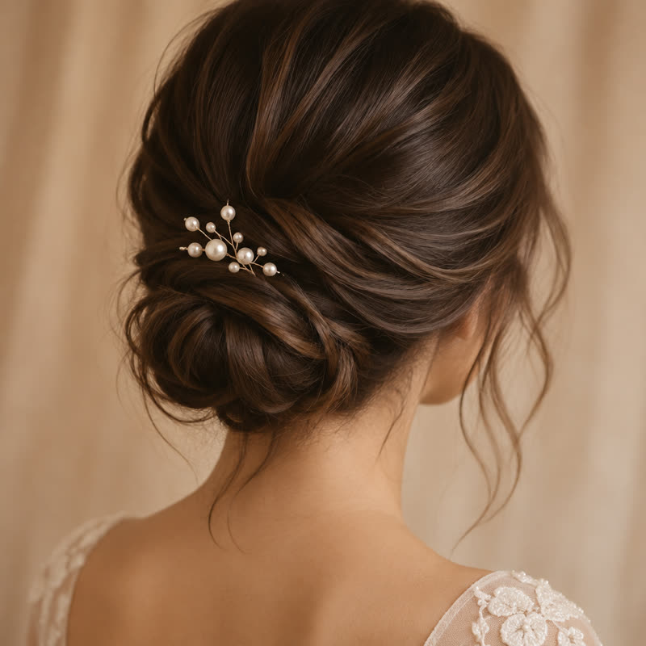
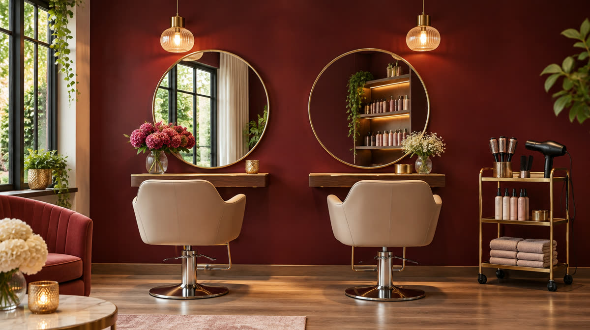

Google'da 4,6 puan · 127 yorum
Kesim, fön, boya, balyaj ve gelin başı. Saatinizi WhatsApp'tan seçin, sandalyeniz hazır olsun.

Fiyat ve uygun saat için hizmetin yanındaki bağlantıya dokunun; mesajınız hazır gelir.
Yüz hattınıza göre kesim, kalıcı hacimli fön
Tek ton, beyaz kapatma, ton düzeltme
Doğal geçişli, saçı yormayan açma
Kabarma karşıtı düzleştirme, nem bakımı
Topuz, örgü ve dalga modelleri
Kaş alımı, özel gün makyajı



Yazın
İstediğiniz hizmeti ve günü WhatsApp'tan iletin.
Saatinizi onaylayalım
Boş saatleri ve fiyatı hemen bildirelim.
Gelin, beklemeyin
Sandalyeniz randevu saatinizde hazır.